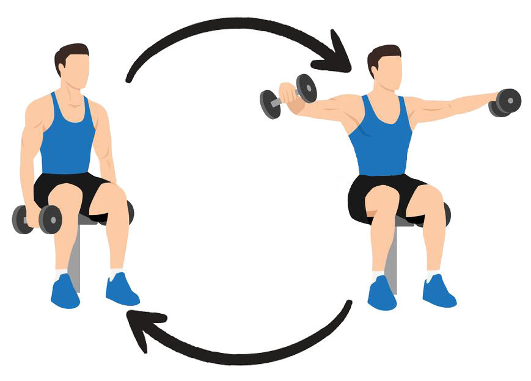
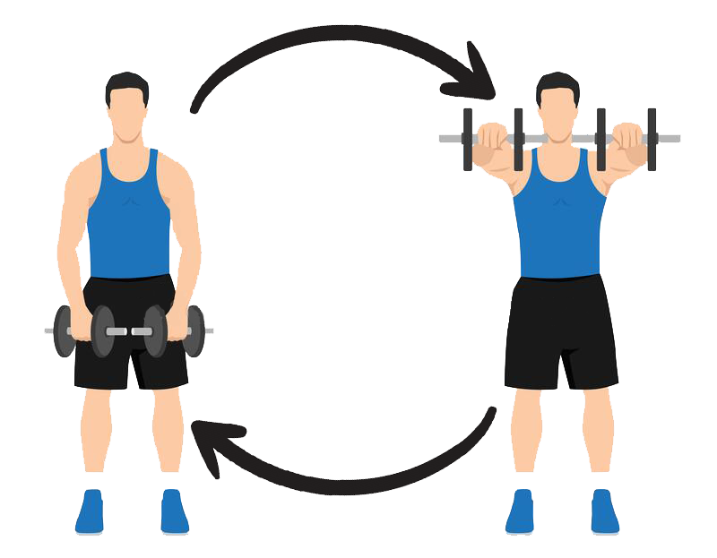
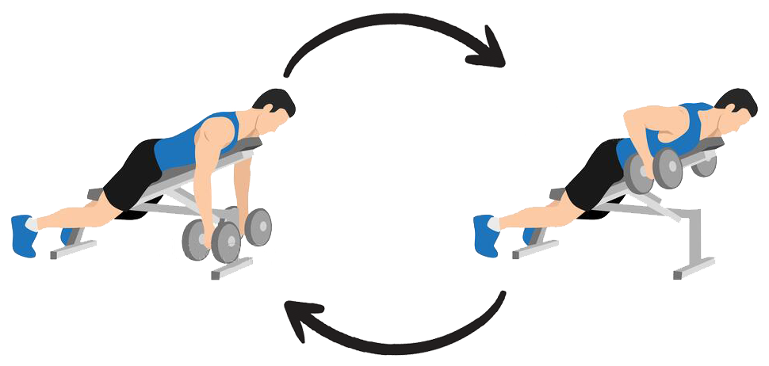
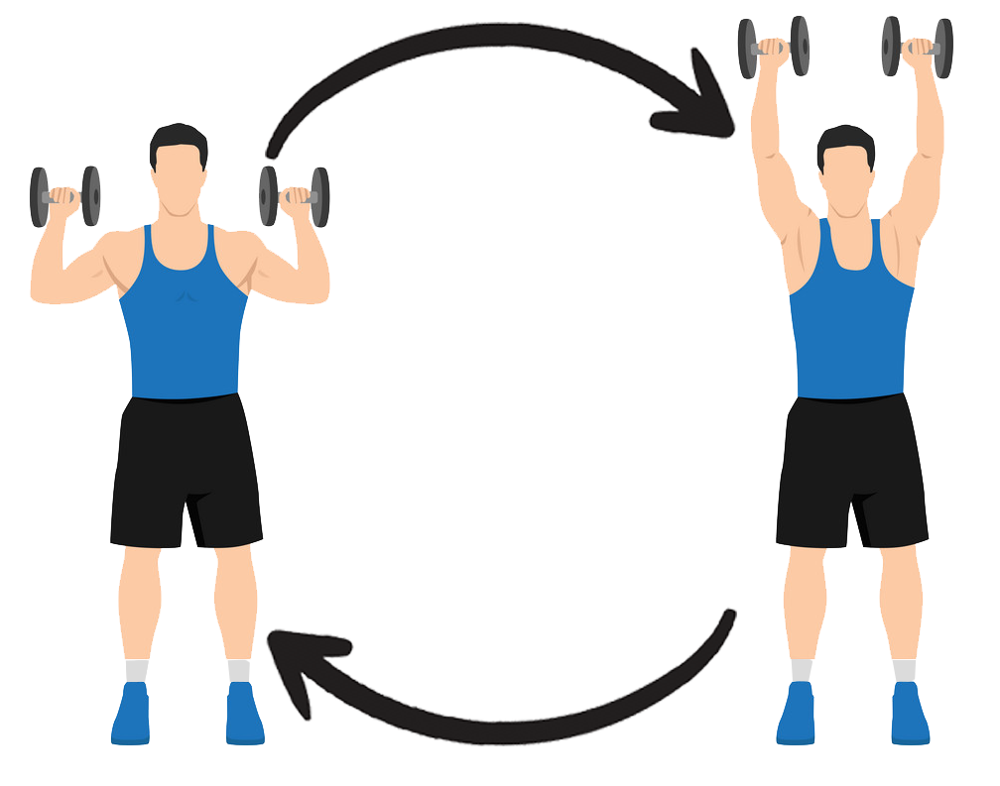
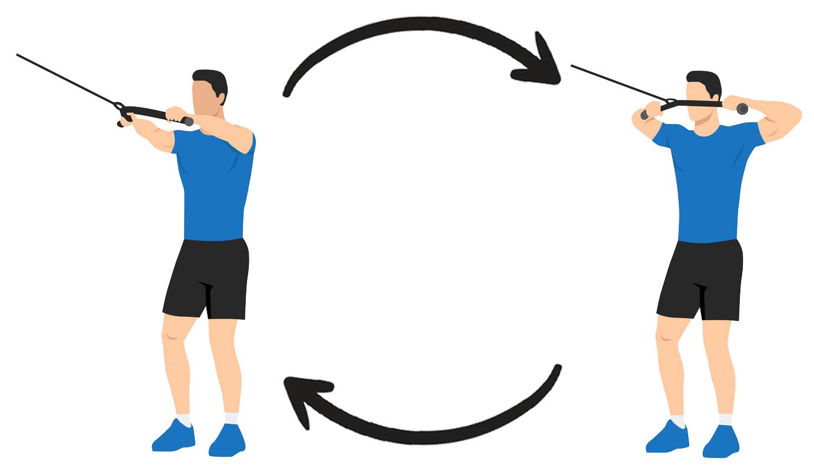

Seated rear lateral raise
- Stai pe marginea unei bănci cu gantere lângă tine.
- Aplecați-vă înainte și sprijiniți-vă trunchiul pe coapse.
- Ține-ți spatele plat.
- Ridicați încet greutățile în sus și în lateral până când coatele sunt la înălțimea umerilor.
- Îndoiți ușor coatele și înclinați mâinile înainte în timp ce faceți acest lucru.
- Țineți această poziție pentru câteva secunde.
- Coborâți încet brațele înapoi în poziția de pornire.
- Faceți 3-4 seturi de 10-15 repetări.

Dumbbell front raise
- Stai drept cu o ganteră în fiecare mână.
- Pune-ți mâinile în fața ta, cu palmele îndreptate spre coapse.
- Ține-ți trunchiul nemișcat și ridică ambele gantere.
- Păstrați o ușoară îndoire a cotului și palma în jos.
- Ridicați brațele până când sunt puțin mai sus decât paralele cu podeaua.
- Faceți o pauză în partea de sus și apoi coborâți încet brațele în poziția de pornire.
- Faceți 2-3 seturi de 16-20 de repetări.

45-degree incline row
- Întindeți-vă pe burtă pe o bancă înclinată la 45 de grade.
- Lăsați-vă brațele să atârne drept în jos în timp ce țineți o gantere în fiecare mână.
- Strângeți omoplații împreună în timp ce vă îndoiți coatele pentru a vă ridica brațele.
- Ține-ți brațele superioare perpendiculare pe corp pe tot parcursul mișcării.
- Pauză în partea de sus a mișcării.
- Readuceți încet greutățile în poziția de pornire.
- Faceți 2-3 seturi de 6-12 repetări.

Overhead shoulder press
- Stai drept și ține o mreană sau gantere puțin deasupra pieptului, cu mâinile puțin mai late decât lățimea umerilor.
- Apăsați greutatea direct în sus, spre tavan, ținând coatele trase înăuntru.
- Menține puterea picioarelor, spatelui și nucleului pentru echilibru.
- Coborâți pentru a reveni la poziția inițială.
- Faceți 2-3 seturi de 5-8 repetări.

Face pulls
- Setați un atașament de frânghie și plasați-l la înălțimea pieptului superior sau puțin mai sus.
- Țineți frânghia cu o prindere în sus și faceți un pas înapoi pentru a crea tensiune.
- Lăsați coatele să se întindă în lateral și paralele cu podeaua.
- Trageți frânghia spre față.
- Țineți această poziție complet contractată pentru un moment în timp ce vă concentrați pe angajarea deltoizilor din spate și a spatelui superior.
- Reveniți încet la poziția inițială.
- Faceți 3-5 seturi de 15-20 de repetări.
